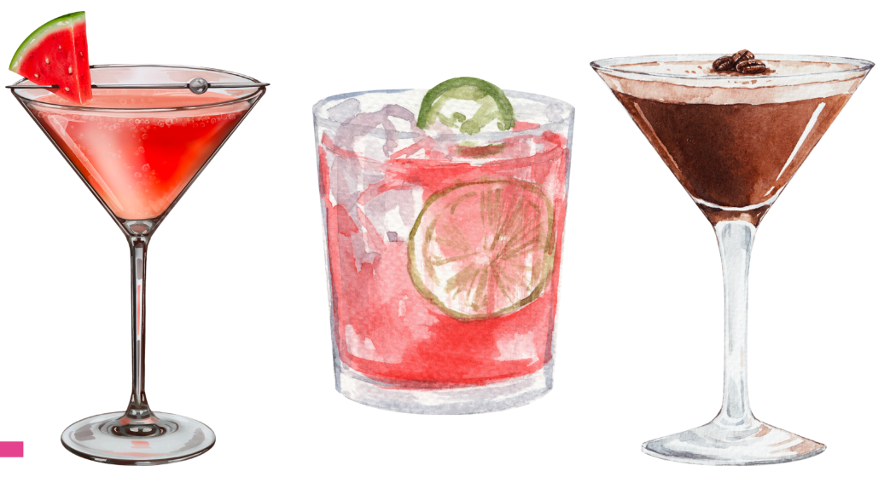

This classic dry gin is exceptionally smooth with an elegant hit of juniper and subtle citrus, accompanied by light, bright spice. Refined yet vibrant, like a parterre bursting with new growth.
CURIOUS?
People say gin was invented by monks, but there’s no way anyone but a gardener would have thought to infuse a spirit with such a cornucopia of botanicals.
CURIOUS
GARDEN
GIN
every sip blossoms.
This delicate pink gin has subtle, sweet floral highlights. Soft and uplifting, like the rose blooms that light up Aotearoa in spring.
This blush pink gin is a juicy burst of succulent grapefruit and tangy lemon. Fresh and zesty, just like all those citrus trees in gardens across Aotearoa.

This classic vodka is smooth and refined, with a subtle zest set off by the purity of Canterbury’s pristine artesian water.
every sip warms the spirit.
VODKA
TWIST. SHAKE & POUR
CURIOUS COCKTAILS
WATERMELON GIN SOUR
MADE WITH CURIOUS GARDEN DRY GIN
People say gin was invented by monks, but there’s no way anyone but a gardener would have thought to infuse a spirit with such a cornucopia of botanicals.
COCKTAILS
twist.shake.pour.
Tropical Martini
Tropical Martini balances the refreshing tartness of passionfruit with the heady flavour of guava for a fragrant, fruity drink. A luscious dose of paradise to transport you to good times.
Watermelon Gin Sour
Watermelon Gin Sour blends the refreshing sweetness of watermelon with tangy citrus for a tart, juicy taste sensation. Get the party started with this explosion of flavour.
Espresso Martini
Espresso Martini infuses a rich, aromatic brew of Brazilian coffee with a kick of spirit and a smooth, creamy finish. A warming, velvety pick-me up to be savoured with friends.
HOW
TO
SERVE
